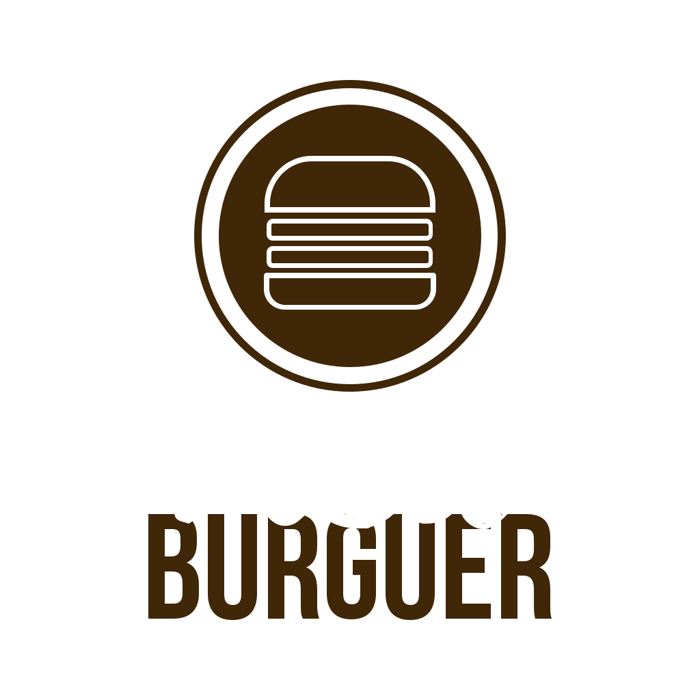

<ion-content color = 'primary' padding>
  <p text-center></p>

  <ion-button color = 'secondary' expand="block" (click) = 'fazerPedido()'>Fazer Pedido</ion-button>
  <ion-button color = 'secondary' expand="block">Pedidos Realizados</ion-button>
  <ion-button color = 'secondary' expand="block">Avaliar Pedido</ion-button>
  
</ion-content>